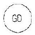
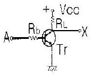
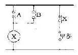
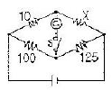
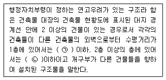
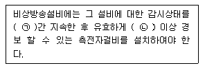

소방설비산업기사(전기) (2008-03-02 기출문제)
1과목: 소방원론
1. 다음 가스 중 유독성이 커서 화재시 인명피해 위험성이 높은 가스는?
- N2
- O2
- CO
- H2
(정답률: 88%)

2. 다음 중 패닉(panic) 현상의 직접적인 발생원인과 가장 거리가 먼 것은?
- 연기에 의한 시계제한
- 유독가스에 의한 호흡장애
- 경종의 발령에 의한 청각장애
- 외부와의 단절로 인한 고립
(정답률: 79%)
3. 부피비로 메탄 80%, 에탄 15%, 프로판 4%, 부탄 1% 인 혼합기체가 있다. 이 기체의 공기 중에서의 폭발하한계는 몇 vol% 인가? (단, 공기 중 단일 가스의 폭발하한계는 메탄 5vol%, 에탄 2vol%, 프로판 2vol%, 부탄 1.8vol% 이다.)
- 2.2
- 3.8
- 4.9
- 6.2
(정답률: 75%)
4. 다음 한계산소농도에 대한 설명 중 틀린 것은?
- 가연물의 종류, 소화약제의 종류와 관계없이 항상 일정한 값을 갖는다.
- .연소가 중단되는 산소의 한계농도이다.
- 한계산소농도는 질식소화와 관계가 있다.
- 소화에 필요한 이산화탄소소화약제의 양을 구할 때 사용될 수 있다.
(정답률: 77%)
5. 다음 중 피난설비와는 관계가 없는 것은?
- 유도등
- 완강기
- 비상콘센트설비
- 휴대용비상조명등
(정답률: 76%)
6. 다음 위험물 중 제2류 위험물인 가연성 고체에 해당하는 것은?
- 칼륨
- 나트륨
- 질산에스테르류
- 마그네슘
(정답률: 59%)
7. 공기 중의 산소농도를 희박하게 하여 소화하는 방법에 해당하는 것은?
- 파괴소화
- 제거소화
- 냉각소화
- 질식소화
(정답률: 90%)
8. 물 1g 이 100℃에서 수증기로 되었을 때의 부피는 1기압을 기준으로 약 몇 L 인가?
- 0.3
- 1.7
- 10.8
- 22.4
(정답률: 40%)
9. “압력이 일정할 때 기체의 부피는 절대온도에 비례하여 변한다”라고 하는 것을 무슨 법칙이라 하는가?
- 보일의 법칙
- 샤를의 법칙
- 아보가드로의 법칙
- 뉴톤의 제1법칙
(정답률: 63%)
10. 다음 중 코크스의 일반적인 연소형태에 해당하는 것은?
- 분해연소
- 증발연소
- 표면연소
- 자기연소
(정답률: 77%)
11. B급 화재는 다음 중 어떤 화재인가?
- 금속화재
- 일반화재
- 전기화재
- 유류화재
(정답률: 89%)
12. 폴리염하비닐이 연소할 때 생성되는 연소가스에 해당하지 않는 것은?
- HCl
- CO2
- CO
- SO2
(정답률: 67%)
13. 연소의 기본 3요소라 할 수 없는 것은?
- 증발잠열
- 점화원
- 산소공급원
- 가연물
(정답률: 91%)
14. 피난계획의 일반원칙 중 fail safe 에 대한 설명으로 옳은 것은?
- 한 가지 피난기구가 고장이 나도 다른 수단을 이용할 수 있도록 고려하는 것
- 피난설비를 반드시 이동식으로 하는 것
- 본능적으로 상태에서도 쉽게 식별이 가능하도록 그림이나 색채를 이용하는 것
- 피난수단을 조작이 간편한 원시적인 방법으로 설계하는 것
(정답률: 76%)
15. 다음 중 점화원이 될 수 없는 것은?
- 정전기
- 기화열
- 전기불꽃
- 마찰열
(정답률: 85%)
16. 분말소화약제에 사용되는 제1인산암모늄의 열분해시 생성 되지 않는 것은?
- H2O
- NH3
- HPO3
- CO2
(정답률: 64%)
17. 건축물의 화재 발생시 열전달 방법과 가장 관계가 먼 것은?
- 전도
- 대류
- 복사
- 환류
(정답률: 90%)
18. 가연물이 되기 쉬운 조건이 아닌 것은?
- 열전도율이 커야 한다.
- 발열량이 커야 한다.
- 활성화에너지가 작아야 한다.
- 산소와의 친화력이 큰 물질이어야 한다.
(정답률: 69%)
19. 소방시설의 분류에서 다음 중 소화설비에 해당하지 않는 것은?
- 스프링클러설비
- 수동식소화기
- 옥내소화전설비
- 연결송수관설비
(정답률: 76%)
20. 다음 중 메탄가스의 공기 중 연소범위(vol%)에 가장 가까운 것은?
- 2.1 ~ 9.5
- 5 ~ 15
- 2.5 ~ 81
- 4 ~ 75
(정답률: 64%)
2과목: 소방전기회로
21. 그림과 같은 심벌로 표시되는 계기는?

- 무효전력계
- 검류기
- 접지계전기
- 역률계
(정답률: 60%)
22. 그림과 같은 무접점회로는 어떤 논리회로를 나타낸 것인가?

- AND
- OR
- NOT
- NAND
(정답률: 64%)
23. 정전압 전원장치에서 무부하때의 단자전압이 24V, 전부하때의 단자전압이 22V라면 전압변동율은 약 몇 [%] 인가?
- 5%
- 7%
- 9%
- 11%
(정답률: 64%)
24. 회로의 전압과 전류를 측정할 때 전압계와 전류계를 부하에 연결하는 방법이 옳은 것은?
- 전압계는 병렬, 전류계는 직렬연결
- 전압계는 직렬, 전류계는 병렬연결
- 전압계와 전류계 모두 직렬연결
- 전압계와 전류계 모두 병렬연결
(정답률: 78%)
25. 트랜스퍼접점(transfer co??ac?) 이라고 하며, 고정 a접점과 b 접점을 공유하고 조작 전 b접점에 가동부가 접촉되어 있다가 누르면 a 접점으로 접환되는 접점은?
- K 접점
- C 접점
- T 접점
- F 접점
(정답률: 42%)
26. 다이오드(diode)에서 PN 접합 양면에 가해지는 전압의 방향에 따라 전류를 흐르거나 흐르지 못하게 하는 작용을 무엇이라 하는가?
- 정류작용
- 증폭작용
- 방진작용
- 트리거?작용
(정답률: 62%)
27. 220V의 전원에 접속하여 1kW의 전력을 소비하는 저항을 110V 전원에 접속하면 소비전력은 몇 [kW] 가 되겠는가?
- 0.25kW
- 2.5kW
- 25kW
- 50kW
(정답률: 46%)
28. 임피던스가 각각 5-jΩ 과 8+3jΩ 인 직렬회로의 합성 임피던스의 크기는 약 몇 [Ω] 인가?
- 5.1Ω
- 7.?Ω
- 8.5Ω
- 13.2Ω
(정답률: 47%)
29. 그림과 같은 유접점회로에서 나타내고 있는 게이트의 명칭은?

- AND 게이트
- OR 게이트
- NAND 게이트
- NOR 게이트
(정답률: 57%)
30. 다음 중 정류시 맥동률이 가장 적은 정류방식은?
- 단상반파
- 단상전파
- 3상반파
- 3상전파
(정답률: 70%)
31. 직류전동기의 회전수를 일정하게 유지시키기 위하여 전압을 변화시켰다면 회전수는 무엇에 해당 되는가?
- 조작량
- 제어량
- 옥표값
- 기준값
(정답률: 45%)
32. 역률이 0.8인 옥내소화전용 전동기에 3상 380V의 교류 전압을 가했더니 10A의 전류가 흘렀다. 전동기의 소비전력은 약 몇 [kW] 인가?
- 3.04kW
- 5.27kW
- 3040kW
- 5265kW
(정답률: 36%)
33. 피드백제어에서 반드시 필요한 장치는?
- 입력과 출력을 비교하는 장치
- 응답속도를 좋게 하는 장치
- 안정도를 좋게 하는 장치
- 고속 구동장치
(정답률: 78%)
34. 어느 직류전원에 전류를 흘릴 때 전원전압을 6배로 하여 흐르는 전류가 2.5배가 되도록 하려면 저항값은 몇 배로 하여야 하는가?
- 0.4
- 2.4
- 3.9
- 15.0
(정답률: 64%)
35. 어떤 코일에 흐르는 전류가 0.01초 사이에 0A로부터 10A로 변할 때 30V의 기전력이 발생했다. 이 코일의 자기 인덕턴스는 몇 [mH] 인가?
- 0.3mH
- 3mH
- 30mH
- 300mH
(정답률: 42%)
36. 그림에서 스위치 S를 개폐해도 검류계 G의 지침이 흔들리지 않았을 때, 저항 X[Ω]의 값으로 다음 중 알맞은 것은? (단, 그림에서 저항의 단위는 모두 Ω 이다.)

- 1.3Ω
- 8.0Ω
- 12.5Ω
- 22.5Ω
(정답률: 75%)
37. 단상변압기 3대(150kVA×3)를 △결선 운전 중에 1대가 고장이 생겨 V결선으로 운전할 경우 출력은 약 몇 [kVA]인가?
- 87kVA
- 260kVA
- 300kVA
- 460kVA
(정답률: 56%)
38. 같은 규격의 축전지 2개를 병렬로 연결하면 어떻게 되는가?
- 전압과 용량이 각각 2배로 된다.
- 전압과 용량이 각각 1/2로 된다.
- 전압은 2배, 용량은 불변이다.
- 전압은 불변, 용량은 2배가 된다.
(정답률: 50%)
39. 다음 중 계전기 접점의 불꽃을 소거할 목적으로 사용하는 것은?
- 바리스터
- 서미스터
- 바랙더다이오드
- 터널다이오드
(정답률: 67%)
40. 플래잉의 오른손법칙에서 중지의 방향은?
- 운동방향
- 자속일도의 방향
- 유기기전력의 방향
- 자력선의 방향
(정답률: 69%)
3과목: 소방관계법규
41. 특정소방대상물의 관계인이 피난시설 또는 방화시설의 폐쇄ㆍ훼손ㆍ변경 등의 행위를 했을 때 과태료 처분으로 알맞은 것은?(관련 규정 개정전 문제로 여기서는 기존 정답인 2번을 누르면 정답 처리됩니다. 바뀐 규정 및 내용은 해설을 참고하세요.)
- 100만원 이하
- 200만원 이하
- 300만원 이하
- 500만원 이하
(정답률: 49%)
42. 다음 중 대통령령으로 정하는 소방용 기계ㆍ기구에 속하지 않는 것은?
- 방열제
- 소화약제에 따른 간이소화용구
- 가스누설경보기
- 휴대용비상조명등
(정답률: 57%)
43. 다음 소방시설 중 “소화활동설비”가 아닌 것은?
- 상수도소화용수설비
- 무통신보조설비
- 연소방지설비
- 제연설비
(정답률: 44%)
44. 다음 중 저수조의 설치기준으로 옳지 않은 것은?
- 지면으로부터의 낙차가 4.5m 이하일 것
- 흡수부분의 수심이 0.5m 이상일 것
- 흡수관의 투입구가 사각형인 경우에는 한 변의 길이가 60cm 이하일 것
- 저수조에 물을 공급하는 방법은 상수동 연결하여 자동으로 급수되는 구조일 것
(정답률: 64%)
45. 다음 중 특정소방대상물로서 의료시설에 해당 되지 않는 것은?(오류 신고가 접수된 문제입니다. 반드시 정답과 해설을 확인하시기 바랍니다.)
- 장례식장
- 마약진료소
- 요양소
- 치과의원
(정답률: 35%)
46. 제4류 위험물의 성질로 알맞은 것은?
- 인화성 액체
- 산화성 고체
- 가연성 고체
- 산화성 액체
(정답률: 72%)
47. 다음 중 방염대상물품이 아닌 것은?
- 카페트
- 창문에 설치하는 브라인드를 포함한 커텐류
- 두께가 2mm 미만인 벽지류로서 종이벽지
- 전시용 합판 또는 섬유판
(정답률: 80%)
48. 다음 중 인화성액체위험물(이황화탄소를 제외한다.)의 옥외탱크저장소의 탱크 주위에 설치하는 방유제의 설치 기준으로 맞는 것은?
- 방유제의 높이는 0.5m 이상 2.0m 이하로 할 것
- 방유제내의 면적은 100000m2 이하로 할 것
- 방유제안에 설치된 탱크가 2기 이상일(복원중) 정확안 보개 내용을 아시는 분 께서는 오류 신고를 통하여 내용 작성 부탁 드립니다.(3번은 답 아닙니다...)
- 방유제는 철근콘크리트 또는 흙으로 만들고, 위험물이 방유제의 외부로 유출되지 아니하는 구조로 할 것
(정답률: 37%)
49. 화재의 예방조치 등과 관련하여 불장난, 모닥불, 흡연, 화기(火氣) 취급 그 밖에 화재예방상 위험하다고 인정 되는 행위의 금지 또한 제한의 명령을 할 수 있는 자는?
- 행정자치부장관
- 시ㆍ도지사
- 소방본부장 또는 소방서장
- 경찰서장
(정답률: 69%)
50. 다음 중 소방기본법상 소방대상물에 속하지 않는 것은?(오류 신고가 접수된 문제입니다. 반드시 정답과 해설을 확인하시기 바랍니다.)
- 건축물
- 산림
- 선박건조구조물
- 철도
(정답률: 44%)
51. 관계인이 화재예방과 화재 등 재해발생시 비상조치를 위하여 예방규정을 정하여야 하는 옥외저장소는 지정수량의 몇 배 이상의 위험물을 저장하는 것을 말하는가?
- 10배
- 100배
- 150배
- 200배
(정답률: 54%)
52. 특정방화대상물의 관계인이 방화관리업무를 수향하지 않은 사유로 과태료 처분을 받았다. 만일 과태료처분에 불복이 있는 경우 그 처분의 고지를 받은 날부터 며칠이내에 부?권자에게 이의를 제기할 수 있는가?
- 120일 이내
- 90일 이내
- 60일 이내
- 30일 이내
(정답률: 61%)
53. 소방시설공사업법상 소방시설업에 속하지 않는 것은?
- 소방시설점검업
- 소방시설설계업
- 소방시설공사업
- 소방공사감리업
(정답률: 64%)
54. 소방체험관의 설립ㆍ운영권자는?
- 행정자치부장관
- 소방방재청장
- 시ㆍ도지사
- 소방본부장 및 소방서장
(정답률: 70%)
55. 다음 중 소방활동구역의 설정권자는?
- 시ㆍ도지사
- 군수ㆍ구청장
- 소방대장
- 건설교통부장관
(정답률: 55%)
56. 다음 중 소방시설입 등에 관한 사항으로 옳은 것은?
- 소방시설업의 영업정지 시 그 이용자에게 심한 불편을 줄 때에는 영업정지 처분에 갈음하여 3천만원 이하의 과징금을 부과할 수 있다.
- 소방시설의 공사와 감리는 동일인이 수행할 수 있다.
- 소방시설업은 어떠한 경우에도 지위를 승계할 수 없다.
- 소방시설업자는 소방시설업의 등록증 또는 등록수첩을 1회에 한하여 다른 자에게 빌려 줄 수 있다.
(정답률: 53%)
57. 소방설비산업기사의 자격을 취득한 후 몇 년 이상 소방실무경력이 있어야 소방시설관리사 시험의 응시자격이 있게 되는가?
- 1년
- 2년
- 3년
- 5년
(정답률: 55%)
58. 다음 ( ㉠ ), ( ㉡ ) 에 알맞은 것은?

- ㉠ 3m, ㉡ 5m
- ㉠ 5m, ㉡ 8m
- ㉠ 6m, ㉡ 8m
- ㉠ 6m, ㉡ 10m
(정답률: 57%)
59. 관계인의 정당한 업무를 방해하거나 화재 조사를 수행하면서 알게 된 비밀을 다른 사람에게 누설한 경우의 벌칙으로 알맞은 것은?
- 1천만원 이하의 벌금
- 500만원 이하의 벌금
- 300만원 이하의 벌금
- 200만원 이하의 벌금
(정답률: 66%)
60. 소방시설별 하자보수 보증기간이 다른 것은?
- 피난기구
- 비상경보설비
- 무선통신보조설비
- 자동화재탐지설비
(정답률: 46%)
4과목: 소방전기시설의 구조 및 원리
61. 다음 ( ㉠ ), ( ㉡ ) 에 알맞은 것은?

- ㉠ 30분, ㉡ 20분
- ㉠ 30분, ㉡ 10분
- ㉠ 60분, ㉡ 20분
- ㉠ 60분, ㉡ 10분
(정답률: 68%)
62. 자동화재탐지설비의 발신기 설치기준에 대한 설명으로 옳지 않은 것은?
- 스위치는 바닥으로부터 0.8m 이하의 높이에 설치한다.
- 소방대상물의 층마다 설치한다.
- 당해 소방대상물의 각 부분으로부터 하나의 발신기까지의 수평거리가 25m 이하가 되도록 한다.
- 발신기의 위치를 표시하는 표시등은 적색등으로 하여야 한다.
(정답률: 66%)
63. 비상콘센트설비의 전원부와 외함사이의 절연저항은 500V, 절연저항계로 측정할 경우 몇 [MΩ] 이상이어야 하는가?
- 1MΩ
- 5MΩ
- 20MΩ
- 50MΩ
(정답률: 55%)
64. 화재발생 상황을 단독으로 감지하여 자체에 내장된 음향 장치로 경보하는 감지기로 정의되는 것은?
- 비상경보형 감지기
- 단독경보형 감지기
- 음향내장형 감지기
- 사이렌내장형 감지기
(정답률: 76%)
65. 지하역사에 휴대용비상조명등을 설치하고자 하는 경우 설치기준으로 옳은 것은?
- 보행거리 25m 이내 마다 2개 이상 설치
- 보행거리 25m 이내 마다 3개 이상 설치
- 보행거리 50m 이내 마다 2개 이상 설치
- 보행거리 50m 이내 마다 3개 이상 설치
(정답률: 61%)
66. 당해 전류에 정전기 차폐장치가 설치되지 아니한 무선통신 보조설비의 누설동축케이블 및 공중선은 고압의 전로로 부터 몇 [m] 이상 똘어진 위치에 설치하여야 하는가?
- 1.5m
- 3.0m
- 4.5m
- 6.0m
(정답률: 58%)
67. 자동화재속보설비를 설치하지 아니할 수 있는 경우는?
- 자동화재탐지설비와 연등으로 작동하는 경우
- 수신기가 설치된 장소에 상시 통화 가능한 전화가 설치되어 있고, 감시인이 상주하는 경우
- 수신기가 설치된 장소에 무선통신보조설비가 설치되어 있고, 감시인이 상주하는 경우
- 수신기가 설치된 장소에 비상방송설비가 설치되어 있고, 감시인이 상주하는 경우
(정답률: 36%)
68. 다음 중 피난구유도등을 설치하지 아니할 수 있는 장소에 해당 되는 것은?
- 옥내로부터 직접 지상으로 통하는 출입구
- 직통계단, 직통계단의 계단실 및 그 부속실의 출입구
- 안전구획된 거실로 통하는 출입구
- 거실 각 부분으로부터 쉽게 도달할 수 있는 출입구
(정답률: 38%)
69. 자동화재탐지설비의 연기감지기 설치 기준으로 맞지 않는 것은?
- 천장 또는 반자부근에 배기구가 있는 경우 그 부근에서 멀리 떨어져 설치
- 천장 또는 반자가 낮은 실내 또는 즙은 실내에는 출입구 가까운 부분에 설치
- 감지기는 벽 또는 보로부터 0.6m 이상 떨어진 곳에 설치
- 계단 및 경사로에 1종 및 2종 감지기는 수직거리 15.m 마다 1개 이상 설치
(정답률: 44%)
70. 비상방송설비에서 기동장치에 따른 화재신고를 수신한 후 필요한 음량으로 화재발생상황 및 피난에 유효한 방송이 자동으로 개시될 때까지의 소요시간으로 알맞은 것은?
- 10초 이하
- 15초 이하
- 20초 이하
- 30초 이하
(정답률: 74%)
71. 자동화재탐지설비에서 경계구역에 대한 용어의 정의로 알맞은 것은?
- 자동화재탐지설비의 1회선이 화재를 유효하게 감지할 수 있는 구역
- 소방대상물 중 화재신호를 발신하고 그 신호를 수신 및 유효하게 제어할 수 있는 구역
- 감지기나 발신기에서 발하는 화재신호를 수시하여 화재발생을 표시 및 경보 할 수 있는 구역
- 감지기ㆍ발신기 또는 전기적 접점 등의 작동에 따른 신호를 수신하여 화재발생을 표시 및 경보 할 수 있는 구역
(정답률: 52%)
72. 다음 중 복도에 설치하는 복도통로유도등의 설치 기준으로 올바른 것은?
- 수평거리 15m 마다 설치
- 보행거리 15m 마다 설치
- 수평거리 20m 마다 설치
- 보행거리 20m 마다 설치
(정답률: 47%)
73. 비상방송설비의 음향장치 설치기준 등에 관한 설명 중 옳지 않은 것은?
- 음량조정기를 설치하는 경우 음향조정기의 배선을 3선식으로 할 것
- 실내에 설치하는 확성기 음성입력은 1W 이상일 것
- 음향장치는 정격전압의 30% 전압에서 음향을 발할 수 있을 것
- 조작부의 조작스위치는 바닥으로부터 0.8m 이상 1.5m 이하의 높이에 설치할 것
(정답률: 75%)
74. 누전경보기의 화재안전기준에 있어서 누전경보기 설치 방법 및 전원에 대한 설명 중 옳지 않은 것은?
- 경계전로의 정격전류가 60A 를 초과하는 전로에는 1급 누전경보기를 설치한다.
- 경계전로의 정격전류가 60A 이하의 전로에는 1급 또는 2급 누전경보기를 설치한다.
- 전원은 각극에 개폐기 및 15A 이상의 과전류 차단기를 설치한다.
- 전원은 분전반으로부터 전용회로로 한다.
(정답률: 44%)
75. 누전경보기의 화재안전기준에서 경계전로의 누설전류를 자동으로 검출하여 이를 누점경보기의 수신부에 송신하는 것으로 정의 되는 것은?
- 검출기
- 변류기
- 검류기
- 정류기
(정답률: 61%)
76. 유도표지의 표지면 휘도는 주위 조도 0 [lx] 에서 20분간 발광 후 몇 [mcd/m2] 이상으로 하여야 하는가?
- 6mcd/m2
- 12mcd/m2
- 24mcd/m2
- 36mcd/m2
(정답률: 31%)
77. 다음 중 자동화재탐지설비의 전원회로에 사용하는 내화배선에 사용되는 전선의 종류가 아닌 것은?
- 옥외용 비닐절연전선
- 실리콘 절연전선
- 연피케이블
- 600V2종 비닐절연전선
(정답률: 35%)
78. 다음 중 자동화재탐지설비의 감지기를 설치하지 아니하는 장소로 기준에 갖지 않는 것은?
- 프레스공장ㆍ주조공장 등의 화재발생의 위협이 작은 장소로서 감지기의 유지관리가 어려운 장소
- 부식성 가스가 체류하고 있는 장소
- 목욕실ㆍ화장실 기타 이와 유사한 장소
- 실내의 용적이 22m3인 장소
(정답률: 55%)
79. 비상콘센트설비에 설치하는 비상전원의 종류로 알맞은 것은?
- 축전지설비 또는 비상전원수전설비
- 비상전원수전설비 또는 자가발전기설비
- 자가발전기설비 또는 축전지설비
- 축전지설비 또는 동력제어설비
(정답률: 40%)
80. 정온식감지기는 주방ㆍ보일러실 등으로서 다량의 화기를 취급하는 장소에 설치한다. 이 경우 공칭작동온도가 최고 주위온도보다 몇 [℃] 이상 높은 것으로 설치하여야 하는가?
- 30℃
- 20℃
- 10℃
- 5℃
(정답률: 81%)